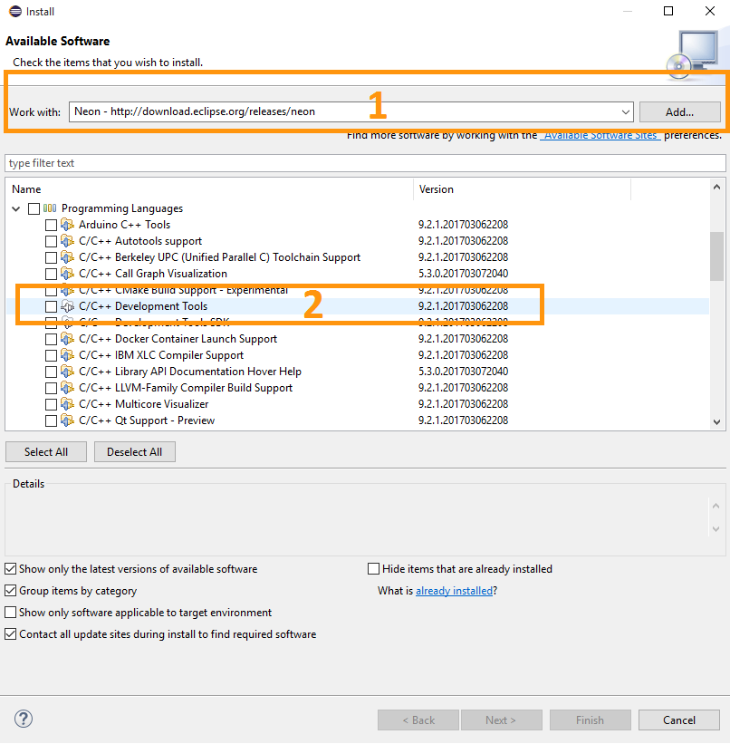
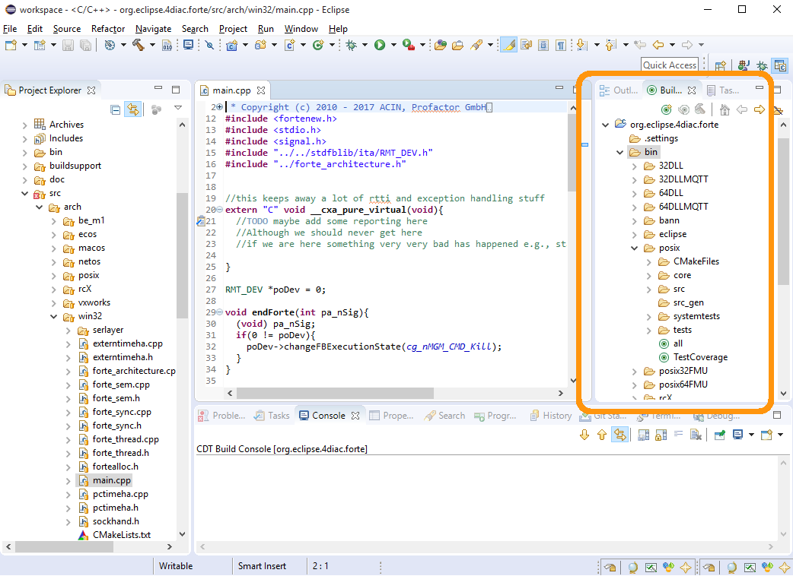
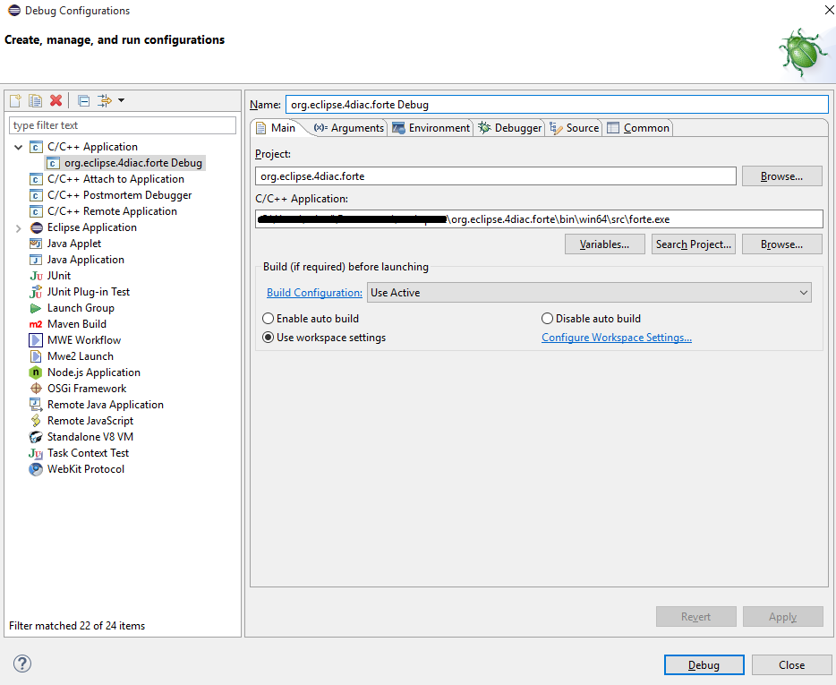
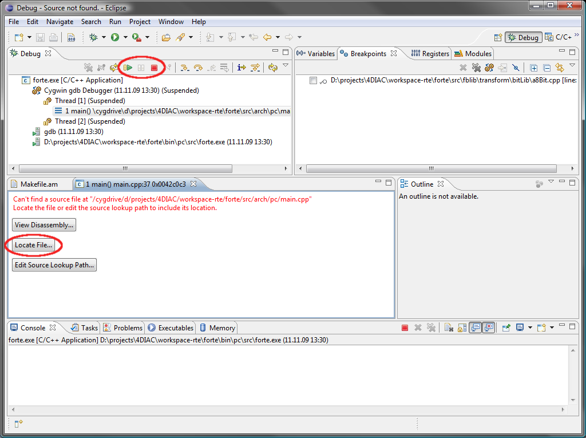

Compiling and Debugging FORTE with Eclipse
Get C/C++ support for Eclipse
- If you do not already use Eclipse to run 4DIAC-IDE from source, download the Eclipse for C/C++ Developers and unzip the file to a suitable location (e.g., c:\eclipse). Otherwise you can integrate C/C++ functionality into your existing Eclipse by , choosing your Eclipse version (1) and checking (2).

- Restart eclipse.exe
- Choose a workspace directory. This will be the directory where your C/C++ projects will be located. It is recommended to set the workspace folder one level above the entire source code folder. Please avoid any spaces in its names. Otherwise you might get problems when compiling FORTE.
Compile FORTE with Eclipse
For using Eclipse you must have chosen the rigth project in step 2 in Generate files for compiling.
- Import FORTE by . In case your Workspace is one folder above your source code folder you only have to click on Browse... and OK afterwards to import FORTE into Eclipse. Otherwise select the directory where you have extracted your FORTE and check (otherwise the source will stay at the original place).
- Start Make Targets View by if it is not open already. Double click the makefile: bin/[YOUR_SYSTEM]/all to compile FORTE to a executable application. If you don't see the targets (all or clean), you can create them in the same window. Make sure that you create them in the right folder.

Debug FORTE with Eclipse
For the debugging of self developed Function Blocks run through the following steps:
- Set a breakpoint in the source code file of the desired Function Block.
- Go to
- Right click on . In the Main tab, you should fill the C/C++ Application: with the binary file you generated (normally FORTE_FOLDER_ROOT/bin/[YOUR_SYSTEM]/src/forte[.exe]). In the Debugger tab, choose your desired debugger. In Windows you normally use Cygwin or MinGW (you have to install them in order for them to appear in the selection box).

- Click Debug
- Confirm for changing into the Debug view
- In case you don't see the file where the debugger stopped at the beggining, press the Locate File button (1) and navigate to the Eclipse workspace which contains the extracted FORTE, type main into the search field of the Windows Explorer and select the offered main.cpp. FORTE is now stopped at the main() function.

- Press the Resume button (2) to run FORTE and observe the behavior of our application.
- Always press the Terminate button for stopping a FORTE launched within Eclipse. This avoids FORTE running in the background (not always shown in Task Manager).
Where to go from here?
Now that you installed the required tools, it's time to start using them. Take a look at the following page:
Step by step tutorial
If you want to compile FORTE for another platform or want to know more about that, here's a quick link back:
Install 4DIAC
If you want to go back to the Start Here page, we leave you here a fast access
Start Here page
Or Go to top